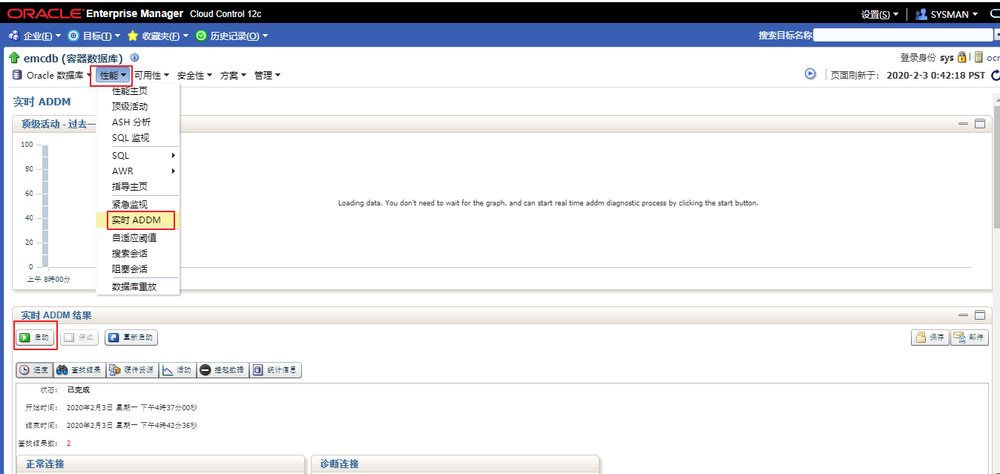
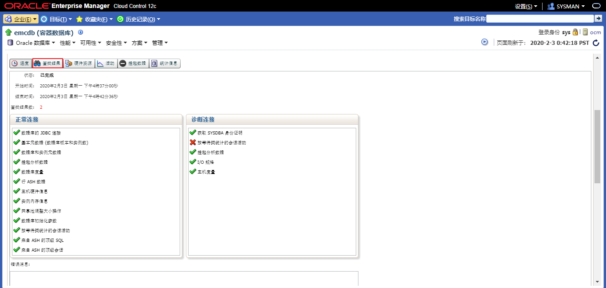
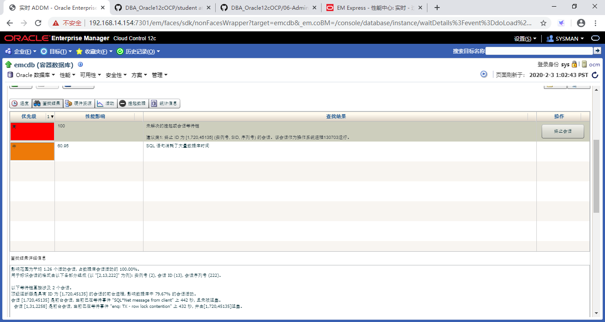
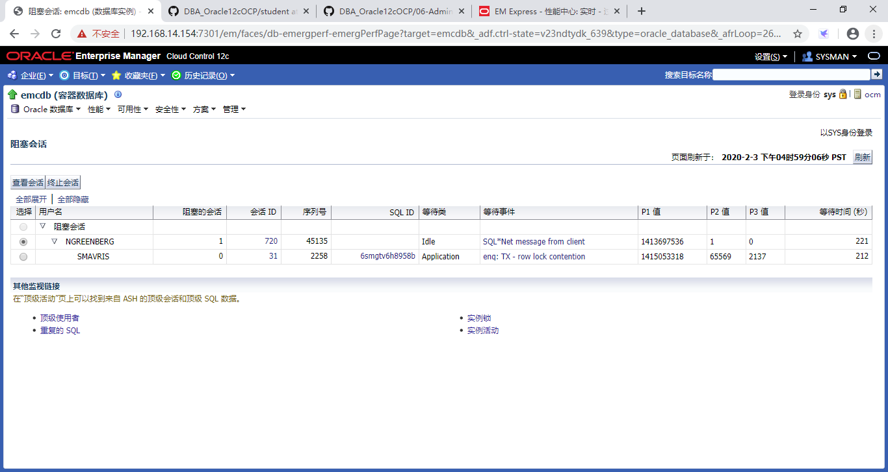
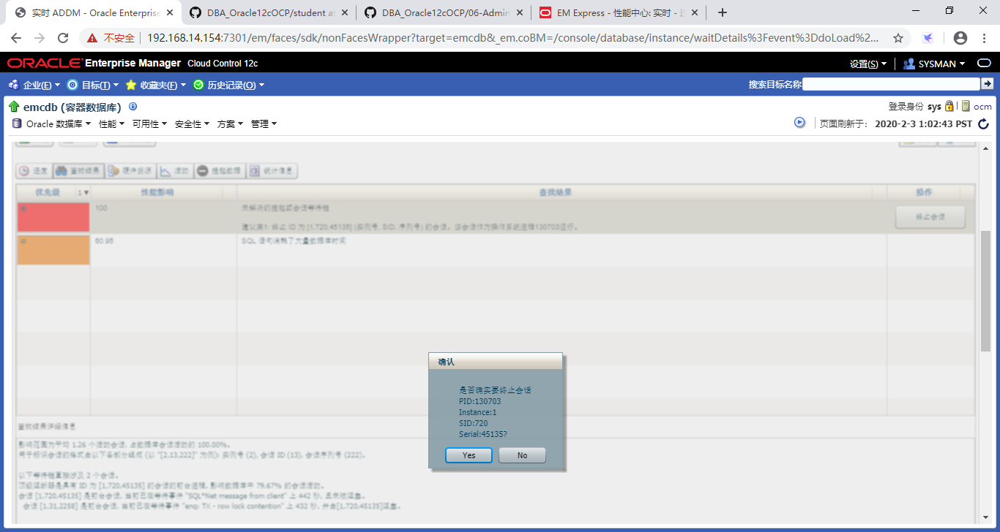
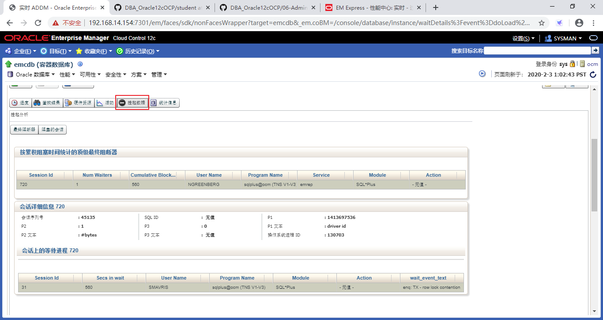

Practices for Lesson 10: Managing Data Concurrency
2020.01.29 BoobooWei
实践10:概览
Practices for Lesson 10: Overview.
Background: The Help desk just received a call from Susan Mavris, an HR representative, complaining that the database is “frozen.” Upon questioning the user, you find that she was trying to update John Chen’s personnel record with his new phone number, but when she entered the new data, her session froze and she could not do anything else.
背景:客服刚刚接到了人力资源代表Susan Mavris的电话，她抱怨说数据库“被冻结了”。在询问用户时，你会发现她试图用她的新电话号码更新John Chen的人事记录，但当她输入新数据时，她的会话冻结了，她不能做任何其他事情。
实践10-1:解决锁冲突
Practice 10-1: Resolving Lock Conflicts
Overview
In this practice, you use two separate SQL*Plus sessions to cause a lock conflict.
Using Enterprise Manager, you detect the cause of the lock conflict, and then resolve the conflict.
在这个实践中，您使用两个单独的SQL*Plus会话来引起锁冲突。
使用Enterprise Manager，您可以检测锁冲突的原因，然后解决冲突。
Task
- Users NGREENBERG and SMAVRIS already exist in your database. User NGREENBERG makes an uncommitted update to a row in the HR.EMPLOYEES table. Then user SMAVRIS attempts to update the same row.
- In a separate terminal window, attempt to update the same row in a separate session by executing the SQL statement shown below. Do not worry if the session seems to “hang”— this is the condition that you are trying to create.
- Using EM Express, navigate to the Current Findings tab of the Performance Hub page and determine which session is causing the locking conflict.
- Using Cloud Control, find the details of the blocking session.
- What was the last SQL statement that the blocking session executed?
- Resolve the conflict in favor of the user who complained, by killing the blocking session.
- Return to the SQL*Plus command window, and note that SMAVRIS’s update has now completed successfully. Issue a ROLLBACK command in this session and exit.
- Try issuing a SQL select statement in the NGREENBERG session. What do you see?
- Close all open SQL sessions by entering exit, and then close the terminal windows.
Practice
请提前创建好用户ngreenberg 和 smavris；授予 HRMANAGER 角色权限。具体创建用户的步骤可参考06-AdministeringUserSecurity-管理用户.md
用户NGREENBERG和SMAVRIS已经存在于您的数据库中。用户NGREENBERG对HR中的员工表一行进行未提交的更新，然后用户SMAVRIS尝试更新相同的行。
会话1
sqlplus ngreenberg/oracle_4U@emrep
show user
select employee_id,salary,phone_number from hr.employees where employee_id = 110;
update hr.employees set phone_number='650.555.1212' where employee_id = 110;会话2
sqlplus smavris/oracle_4U@emrep
show user
select employee_id,salary,phone_number from hr.employees where employee_id = 110;
update hr.employees set salary=8300 where employee_id = 110;
在单独的终端窗口中，通过执行如下所示的SQL语句，尝试在单独的会话中更新相同的行。不要担心会话似乎“挂起”——这是您试图创建的条件。
使用云控制运行实时ADDM，并确定是哪个会话导致了锁定冲突。


使用云控制，查找阻塞会话的详细信息。

选择
性能 > 阻塞会话，查看阻塞会话执行的最后一条SQL语句是什么?
通过终止“阻塞”会话，为抱怨的用户解决冲突。



如果使用SQL命令kill阻塞会话，命令如下：
sqlplus sys/WLS3Gg5_2@emrep as sysdba
ALTER SYSTEM KILL SESSION '720,45135' immediate;
返回到SQL*Plus命令窗口，注意SMAVRIS的更新现在已经成功完成。
[oracle@ocm ~]$ sqlplus smavris/oracle_4U@emrep
SQL*Plus: Release 12.2.0.1.0 Production on Mon Feb 3 16:55:27 2020
Copyright (c) 1982, 2016, Oracle. All rights reserved.
Last Successful login time: Mon Feb 03 2020 16:25:05 +08:00
Connected to:
Oracle Database 12c Enterprise Edition Release 12.2.0.1.0 - 64bit Production
SQL> select employee_id,salary,phone_number from hr.employees where employee_id = 110;
EMPLOYEE_ID SALARY PHONE_NUMBER
----------- ---------- --------------------
110 8300 515.124.4269
SQL> update hr.employees set phone_number='650.555.1212' where employee_id = 110;
1 row updated.
SQL> select employee_id,salary,phone_number from hr.employees where employee_id = 110;
EMPLOYEE_ID SALARY PHONE_NUMBER
----------- ---------- --------------------
110 8300 650.555.1212
尝试在NGREENBERG会话中发出SQL select语句。你看到了什么?
[oracle@ocm ~]$ sqlplus ngreenberg/oracle_4U@emrep
SQL*Plus: Release 12.2.0.1.0 Production on Mon Feb 3 16:55:18 2020
Copyright (c) 1982, 2016, Oracle. All rights reserved.
Last Successful login time: Mon Feb 03 2020 16:25:18 +08:00
Connected to:
Oracle Database 12c Enterprise Edition Release 12.2.0.1.0 - 64bit Production
SQL> update hr.employees set phone_number='650.555.1212' where employee_id = 110;
1 row updated.
SQL> select employee_id,salary,phone_number from hr.employees where employee_id = 110;
select employee_id,salary,phone_number from hr.employees where employee_id = 110
*
ERROR at line 1:
ORA-03113: end-of-file on communication channel
Process ID: 130703
Session ID: 720 Serial number: 45135会话1被kill掉了。
通过输入exit关闭所有打开的SQL会话，然后关闭终端窗口。
KnowledgePoint
通过使用Enterprise Manager cloud control 检测锁冲突的原因，然后解决冲突。
如何通过命令行获取当前的锁冲突，并自动生成kill命令。
sqlplus sys/WLS3Gg5_2@emrep as sysdba
--查看阻塞会话和被阻塞会话
select object_name,machine,s.sid,s.serial#,s.username from v$locked_object l,dba_objects o ,v$session s where l.object_id=o.object_id and l.session_id=s.sid;
exec print_table('select object_name,machine,s.* from v$locked_object l,dba_objects o ,v$session s where l.object_id=o.object_id and l.session_id=s.sid')
--生成kill阻塞会话的语句
select 'ALTER SYSTEM KILL SESSION '||chr(39)||s.sid||','||s.serial#||chr(39)|| ' immediate;' from v$locked_object l,dba_objects o ,v$session s where l.object_id=o.object_id and l.session_id=s.sid;
--被阻塞会话的事件特征
EVENT# : 284
EVENT : enq: TX - row lock contention执行结果
SQL> exec print_table('select object_name,machine,s.* from v$locked_object l,dba_objects o ,v$session s where l.object_id=o.object_id and l.session_id=s.sid')
OBJECT_NAME : EMPLOYEES
MACHINE : ocm
SADDR : 000000006898DB30
SID : 729
SERIAL# : 21153
AUDSID : 2770490
PADDR : 00000000696DF4B0
USER# : 122
USERNAME : SMAVRIS
COMMAND : 6
OWNERID : 2147483644
TADDR : 000000006371DFB0
LOCKWAIT : 0000000067C39418
STATUS : ACTIVE
SERVER : DEDICATED
SCHEMA# : 122
SCHEMANAME : SMAVRIS
OSUSER : oracle
PROCESS : 3766
MACHINE : ocm
PORT : 46053
TERMINAL : pts/4
PROGRAM : sqlplus@ocm (TNS V1-V3)
TYPE : USER
SQL_ADDRESS : 000000008DF20ED8
SQL_HASH_VALUE : 2693043467
SQL_ID : 6smgtv6h8958b
SQL_CHILD_NUMBER : 0
SQL_EXEC_START : 03-feb-2020 17:08:59
SQL_EXEC_ID : 16777219
PREV_SQL_ADDR : 00000000830C9530
PREV_HASH_VALUE : 2659790539
PREV_SQL_ID : 2s9mmb6g8kbqb
PREV_CHILD_NUMBER : 0
PREV_EXEC_START : 03-feb-2020 17:08:57
PREV_EXEC_ID : 16777224
PLSQL_ENTRY_OBJECT_ID :
PLSQL_ENTRY_SUBPROGRAM_ID :
PLSQL_OBJECT_ID :
PLSQL_SUBPROGRAM_ID :
MODULE : SQL*Plus
MODULE_HASH : 3669949024
ACTION :
ACTION_HASH : 0
CLIENT_INFO :
FIXED_TABLE_SEQUENCE : 1350674
ROW_WAIT_OBJ# : 73219
ROW_WAIT_FILE# : 12
ROW_WAIT_BLOCK# : 207
ROW_WAIT_ROW# : 10
TOP_LEVEL_CALL# : 94
LOGON_TIME : 03-feb-2020 17:08:58
LAST_CALL_ET : 362
PDML_ENABLED : NO
FAILOVER_TYPE : NONE
FAILOVER_METHOD : NONE
FAILED_OVER : NO
RESOURCE_CONSUMER_GROUP : OTHER_GROUPS
PDML_STATUS : DISABLED
PDDL_STATUS : ENABLED
PQ_STATUS : ENABLED
CURRENT_QUEUE_DURATION : 0
CLIENT_IDENTIFIER :
BLOCKING_SESSION_STATUS : VALID
BLOCKING_INSTANCE : 1
BLOCKING_SESSION : 16
FINAL_BLOCKING_SESSION_STATUS : VALID
FINAL_BLOCKING_INSTANCE : 1
FINAL_BLOCKING_SESSION : 16
SEQ# : 46
EVENT# : 284
EVENT : enq: TX - row lock contention
P1TEXT : name|mode
P1 : 1415053318
P1RAW : 0000000054580006
P2TEXT : usn<<16 | slot
P2 : 393223
P2RAW : 0000000000060007
P3TEXT : sequence
P3 : 2089
P3RAW : 0000000000000829
WAIT_CLASS_ID : 4217450380
WAIT_CLASS# : 1
WAIT_CLASS : Application
WAIT_TIME : 0
SECONDS_IN_WAIT : 361
STATE : WAITING
WAIT_TIME_MICRO : 361203435
TIME_REMAINING_MICRO : -1
TIME_SINCE_LAST_WAIT_MICRO : 0
SERVICE_NAME : emrep
SQL_TRACE : DISABLED
SQL_TRACE_WAITS : FALSE
SQL_TRACE_BINDS : FALSE
SQL_TRACE_PLAN_STATS : FIRST EXEC
SESSION_EDITION_ID : 133
CREATOR_ADDR : 00000000696DF4B0
CREATOR_SERIAL# : 9
ECID :
SQL_TRANSLATION_PROFILE_ID : 0
PGA_TUNABLE_MEM : 0
SHARD_DDL_STATUS : DISABLED
CON_ID : 3
EXTERNAL_NAME :
PLSQL_DEBUGGER_CONNECTED : FALSE
-----------------
OBJECT_NAME : EMPLOYEES
MACHINE : ocm
SADDR : 000000006934FB98
SID : 16
SERIAL# : 44199
AUDSID : 2770489
PADDR : 00000000696B2C80
USER# : 121
USERNAME : NGREENBERG
COMMAND : 0
OWNERID : 2147483644
TADDR : 000000006318F840
LOCKWAIT :
STATUS : INACTIVE
SERVER : DEDICATED
SCHEMA# : 121
SCHEMANAME : NGREENBERG
OSUSER : oracle
PROCESS : 3745
MACHINE : ocm
PORT : 46031
TERMINAL : pts/2
PROGRAM : sqlplus@ocm (TNS V1-V3)
TYPE : USER
SQL_ADDRESS : 00
SQL_HASH_VALUE : 0
SQL_ID :
SQL_CHILD_NUMBER :
SQL_EXEC_START :
SQL_EXEC_ID :
PREV_SQL_ADDR : 000000008DF20ED8
PREV_HASH_VALUE : 2693043467
PREV_SQL_ID : 6smgtv6h8958b
PREV_CHILD_NUMBER : 0
PREV_EXEC_START : 03-feb-2020 17:08:53
PREV_EXEC_ID : 16777218
PLSQL_ENTRY_OBJECT_ID :
PLSQL_ENTRY_SUBPROGRAM_ID :
PLSQL_OBJECT_ID :
PLSQL_SUBPROGRAM_ID :
MODULE : SQL*Plus
MODULE_HASH : 3669949024
ACTION :
ACTION_HASH : 0
CLIENT_INFO :
FIXED_TABLE_SEQUENCE : 1345978
ROW_WAIT_OBJ# : -1
ROW_WAIT_FILE# : 0
ROW_WAIT_BLOCK# : 0
ROW_WAIT_ROW# : 0
TOP_LEVEL_CALL# : 94
LOGON_TIME : 03-feb-2020 17:08:52
LAST_CALL_ET : 368
PDML_ENABLED : NO
FAILOVER_TYPE : NONE
FAILOVER_METHOD : NONE
FAILED_OVER : NO
RESOURCE_CONSUMER_GROUP : OTHER_GROUPS
PDML_STATUS : DISABLED
PDDL_STATUS : ENABLED
PQ_STATUS : ENABLED
CURRENT_QUEUE_DURATION : 0
CLIENT_IDENTIFIER :
BLOCKING_SESSION_STATUS : NO HOLDER
BLOCKING_INSTANCE :
BLOCKING_SESSION :
FINAL_BLOCKING_SESSION_STATUS : UNKNOWN
FINAL_BLOCKING_INSTANCE :
FINAL_BLOCKING_SESSION :
SEQ# : 71
EVENT# : 418
EVENT : SQL*Net message from client
P1TEXT : driver id
P1 : 1413697536
P1RAW : 0000000054435000
P2TEXT : #bytes
P2 : 1
P2RAW : 0000000000000001
P3TEXT :
P3 : 0
P3RAW : 00
WAIT_CLASS_ID : 2723168908
WAIT_CLASS# : 6
WAIT_CLASS : Idle
WAIT_TIME : 0
SECONDS_IN_WAIT : 367
STATE : WAITING
WAIT_TIME_MICRO : 366874066
TIME_REMAINING_MICRO : -1
TIME_SINCE_LAST_WAIT_MICRO : 0
SERVICE_NAME : emrep
SQL_TRACE : DISABLED
SQL_TRACE_WAITS : FALSE
SQL_TRACE_BINDS : FALSE
SQL_TRACE_PLAN_STATS : FIRST EXEC
SESSION_EDITION_ID : 133
CREATOR_ADDR : 00000000696B2C80
CREATOR_SERIAL# : 253
ECID :
SQL_TRANSLATION_PROFILE_ID : 0
PGA_TUNABLE_MEM : 0
SHARD_DDL_STATUS : DISABLED
CON_ID : 3
EXTERNAL_NAME :
PLSQL_DEBUGGER_CONNECTED : FALSE